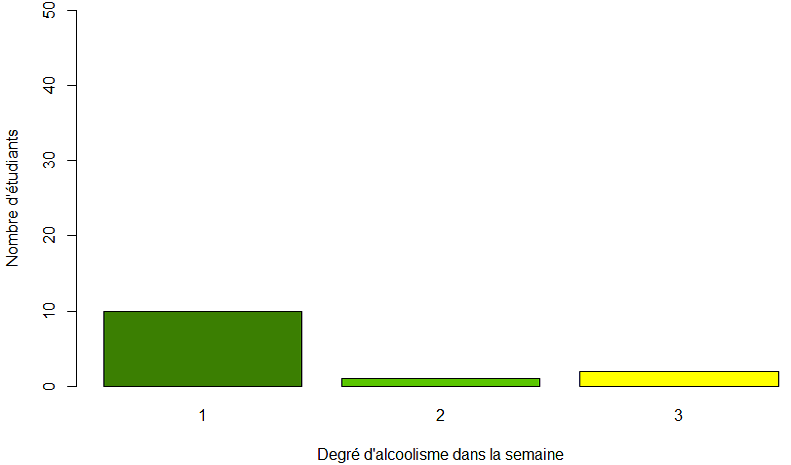
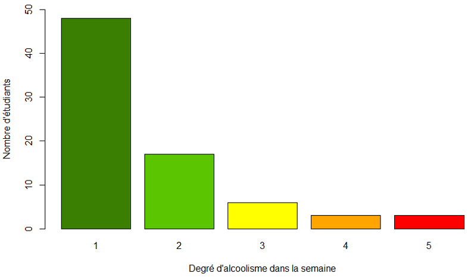
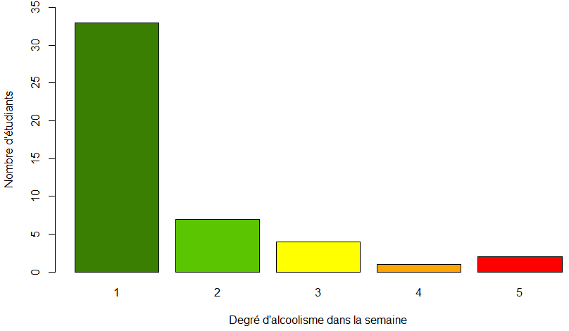
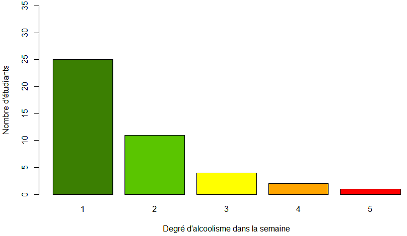
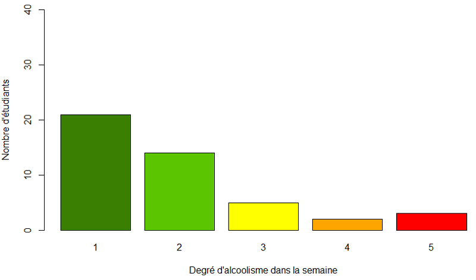
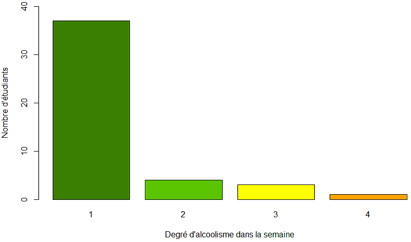

Descriptif du sujet et finalité du projet
La consommation d’alcool chez les jeunes étudiants
est
souvent
sujet de
débat.
Une étude a été menée auprès d’étudiants de deux lycées Portugais au moyen de
rapports
et de
questionnaires scolaires.
Elle vise à vérifier s’il y a un lien entre consommation d’alcool et taux de
réussite à
l'école.
Les caractéristiques des données recueillies comprennent les notes des élèves
(mathématiques et
langue portugaise), les caractéristiques démographiques, sociales et
scolaires.
La finalité du projet est d'étudier le degré d'alcoolisme chez ces étudiants
portugais selon
qu'ils aient
ou non des parents au niveau d'instruction modeste, d'étudier leur réussite scolaire
en
fonction de
l'alcool qu'ils consomment et enfin savoir s'il y a une prédominance d'abus d'alcool
chez les étudiants
masculins.
Ce projet a été réalisé à l'aide du langage de programmation 'R' en mettant en
place des tests d'hypothèses et en calculant diverses quantités statistiques.
Descriptif des données
Les données sont issues de 2 fichiers CSV. L'un comprenant des données d'étudiants ayant été évalués sur des cours de portugais et l'autre comprenant des données d'étudiants ayant été évalués sur des cours de mathématiques. Ces étudiants ont tous entre 15 et 22 ans.
Le premier fichier (portugais) comprend 649 étudiants, avec 59% de filles soit 383 et
41% de garçons soit 266.
Le second fichier (math) comprend 395 étudiants, avec 53% de filles soit 208 et 47% de
garçons soit 187.
De nombreuses données ont été récoltées et stockées dans ces fichiers CSV, néanmoins, on notera que les données suivantes ont été essentielles:
- 'sex' : le sexe de l'étudiant;
- 'Medu' : le niveau d'instruction de la mère de l'étudiant;
- 'Fedu' : le niveau d'instruction du père de l'étudiant;
- 'Dalc' : le degré de consommation d'alcool de l'étudiant dans la semaine;
- 'Walc' : le degré de consommation d'alcool de l'étudiant dans le week-end;
- 'G1' : la note sur 20 obtenue à l'examen de la première période;
- 'G2' : la note sur 20 obtenue à l'examen de la deuxième période;
- 'G3' : la note sur 20 obtenue à l'examen final.
Les données des deux fichiers ont été fusionné tel que nous obtenions 370 étudiants qui étaient ET en cours de langue portugaise, ET en cours de Mathématiques. Nous en avons extrait un échantillon constitué des étudiants âgés d'au moins 18 ans car seul cet échantillon est en âge légal d'acheter et de consommer de l'alcool. Cet échantillon constitue 90 étudiants.
Méthodologie suivie pour répondre aux questions
Tout d'abord, nous avons déterminé notre échantillon puis nous
définissions une hypothèse 'h1' et son hypothèse opposée 'h2'.
Nous avons mis en place le test d'hypothèse dans R Studio et nous avons réalisés des
calculs de quantités statistiques (moyenne, variance).
Nous avons réalisé des histogrammes afin de visualiser les résultats, de les comparer
(par exemple comparer le degré de consommation d'alcool chez les étudiants qui
réussissent et ceux qui échouent leur examen final).
Puis, nous avons calculé l'intervalle de confiance afin de savoir si la moyenne s'y
trouvait et pouvoir réfuter ou accepter l'hypothèse à 95%.
Consommation d’alcool pour les étudiants dont les parents ont un niveau d’instruction modeste
Consommation d’alcool pour les étudiants dont les parents ont un niveau d’instruction non modeste
Hypothèse n°1:
la consommation d’alcool moyenne est plus élevée chez les étudiants dont les parents
ont un niveau d’instruction modeste
Hypothèse n°2 : la
consommation d’alcool moyenne est plus élevée chez les
étudiants dont les parents n'ont pas un niveau d’instruction modeste
En abscisse, nous retrouvons la consommation d'alcool en semaine. "1" étant très peu de consommation et "5" étant très forte consommation d'alcool.
Nous avons calculé la moyenne de la consommation d'alcool chez les personnes ayant des parents modestes et non modestes.
Nous allons définir M1 = Moyenne du degré d'alcoolisme
des personnes ayant des
parents non modestes
et M2 = Moyenne du degré d'alcoolisme des personnes ayant des parents
modestes
Après le calcul nous avons trouvé que M1 = 1.384615 et M2 =
1.649351.
Nous voyons que la moyenne de consommation d'alcool des personnes ayant des parents non
modestes est moins élevée mais ce n'est pas
suffisant pour confirmer notre hypothèse.
Les calculs de la variance de l'hypothèse 1 (V1) et de l'hypothèse 2
(V2) ont donné:
V1 = 0.5897436 et V2 = 1.099111.
On en déduit que les données de l'hypothèse 1 sont peu dispersées, proche de la moyenne. En effet,
aucun étudiant ayant des parents au niveau d'instruction modeste ne consomme beaucoup d'alcool (ni n'en abuse).
Il n'y a pas d'étudiants tel que leur degré d'alcool est >3.
Quant aux données de l'hypothèse 2, elles sont beaucoup plus dispersées que celles de l'hypothèse 1 du fait que l'on
retrouve des étudiants ayant une valeur extrême de degré d'alcoolisme (égale à 5).
Nous avons remarqué qu'il y a énormément de personnes qui boivent de l'alcool avec un
faible degré ce qui fait que les deux moyennes
tendent vers 1.
Nous avons vu qu'il y a énormément de personnes ayant une consommation d'alcool avec un
degré de 1 (très faible) alors nous avons
décidé de calculer le pourcentage de personnes qui ont un degré de consommation
supérieur ou égal à 2 pour l'hypothèse 1 puis pour l'hypothèse 2.
Nos résultats sont :
- 0.2307692 soit 23% de personnes ayant des parents modestes qui ont un degré supérieur ou égal à 2.
- 0.3766234 soit 38% de personnes ayant des parents non modestes qui ont un degré supérieur ou égal à 2.
Nous remarquons que pour l'échantillon qui constitue l'hypothèse 2, les étudiants avec
un
degré d'alcoolisme égal ou supérieur à 2 consituent
une plus grosse part que celle de l'hypothèse 1.
Nous pouvons voir cela visuellement à l'aide du graphe où les étudiants ayant des
parents
modestes n'ont pas un taux d'alcoolémie supérieur à 3.
Pour confirmer notre hypothèse, on décide de calculer l'intervalle de confiance de
l'hypothèse 2, qui semble vraie.
En calculant, nous avons un intervalle entre 1.411396 et 1.887305.
Nous rappelons que M2 = 1.649351 et il doit appartenir à l'intervalle
[1.411396 ;
1.887305] qui est nommé intervalle de confiance à 95%.
En conclusion, l'hypothèse 2 est acceptée à 95%.
Nous supposons que les étudiants ayant des parents au niveau d'instruction non modeste
consomment plus d'alcool car, vivant dans un milieu moins précaire, ils ont la
possibilité
d'acheter de l'alcool plus aisément.
Consommation d'alcool pour les étudiants qui réussissent les examens
Consommation d'alcool pour les étudiants qui ne réussissent pas les examens
Hypothèse n°1:
les étudiants qui réussissent leur examen sont plus nombreux à abuser de la
consommation d'alcool
Hypothèse n°2 : les
étudiants qui ne réussissent pas leur examen sont plus nombreux à abuser de la
consommation d'alcool
En abscisse, nous retrouvons la consommation d'alcool en semaine. "1" étant très peu de consommation et "5" étant très forte consommation d'alcool.
Nous avons calculé la moyenne de la consommation d'alcool chez les
étudiants par rapport
à leur niveau de réussite :
une note dans le champ G3 ≥10 signifie que l'étudiant a réussi son
année.
Si la note du champ G3 <10 alors l'étudiant a échoué son année.
Nous allons définir M1 = Moyenne du degré d'alcoolisme
des personnes ayant
réussi leur année
et M2 = Moyenne du degré d'alcoolisme des personnes ayant échoué leur année
Après le calcul nous avons trouvé que M1 = 1.553191 et M2 =
1.674419.
Nous voyons que la moyenne des personnes ayant réussi leur année est moins élevée que la
moyenne des personnes en échec mais ce n'est pas
suffisant pour confirmer notre hypothèse.
Les calculs de la variance de l'hypothèse 1 (V1) et de l'hypothèse 2
(V2) ont donné:
V1 = 1.078631 et V2 = 0.986711.
On en déduit que les données des deux hypothèses sont dispersées quasiment de la même manière comme
visualisable dans les histogrammes correspondant aux deux hypothèses.
Comme précédemment nous avons décidé de calculer le pourcentage de personnes qui ont un
degré de consommation supérieur ou égal à 2 pour l'hypothèse 1 puis pour l'hypothèse 2.
Nos résultats sont :
- 0.2978723 soit 30% de personnes en réussite qui ont un degré supérieur ou égal à 2.
- 0.4186047 soit 42% de personnes en échec qui ont un degré supérieur ou égal à 2.
Nous remarquons que pour l'échantillon qui constitue l'hypothèse 2,
les étudiants avec un
degré d'alcoolisme égal ou supérieur à 2 constituent
une plus grosse part que celle de l'hypothèse 1.
Pour confirmer notre hypothèse, on décide de calculer l'intervalle de confiance de
l'hypothèse 2, qui semble vraie.
En calculant, nous avons un intervalle entre 1.368716 et 1.980121.
Nous rappelons que M2 = 1.674419 et il doit appartenir à l'intervalle
[1.368716 ;
1.980121] qui est nommé intervalle de confiance à 95%.
En conclusion, l'hypothèse 2 est acceptée à 95%.
Nous supposons que les étudiants qui consomment de l'alcool réussissent moins leur
examen
que ceux qui n'en consomment pas voire peu car l'alcool entraînerait un déficit de la
capacité des étudiants à apprendre,
diminuerait leur capacité à conserver des éléments d'information, à raisonner et à
réfléchir
convenablement.
Consommation d'alcool pour les étudiants masculins
Consommation d'alcool pour les étudiantes féminines
Hypothèse n°1:
les étudiants masculins ont un degré d'alcoolisme supérieur aux étudiantes
féminines.
Hypothèse n°2 : les
étudiantes féminines ont un degré d'alcoolisme supérieur aux étudiants
masculins.
En abscisse, nous retrouvons la consommation d'alcool en semaine. "1" étant très peu de consommation et "5" étant très forte consommation d'alcool.
Nous avons calculé la moyenne de la consommation d'alcool chez les étudiants masculins et féminins.
Nous allons définir M1 = Moyenne du degré d'alcoolisme
des étudiants du sexe masculin
et M2 = Moyenne du degré d'alcoolisme des étudiants du sexe féminin
Après le calcul nous avons trouvé que M1 =1.933333 et M2 =
1.288889.
Nous voyons que la moyenne de la consommation d'alcool chez les femmes est moins élevée
que la moyenne chez les hommes mais ce n'est pas
suffisant pour confirmer notre hypothèse.
Les calculs de la variance de l'hypothèse 1 (V1) et de l'hypothèse 2
(V2) ont donné:
V1 = 1.381818 et V2 = 0.4828283.
On en déduit que les données de l'hypothèse 2 sont peu dispersées, proche de la moyenne.
Il y a concentration d'étudiantes au niveau du degré d'alcool égal à 1 et aucune étudiante n'a de valeur extrême (égale à 5) de degré d'alcoolisme.
Quant aux données de l'hypothèse 1, elles sont beaucoup plus dispersées que celles de l'hypothèse 2.
Comme précédemment nous avons décidé de calculer le pourcentage de personnes qui ont un
degré de consommation supérieur ou égal à 2 pour l'hypothèse 1 puis pour l'hypothèse 2.
Nos résultats sont :
- 0.5333333 soit 53% d'hommes qui ont un degré supérieur ou égal à 2.
- 0.1777778 soit 18% de femmes qui ont un degré supérieur ou égal à 2.
Nous remarquons que pour l'échantillon qui constitue l'hypothèse 1, les étudiants avec
un
degré d'alcoolisme égal ou supérieur à 2 consituent
une plus grosse part que celle de l'hypothèse 2.
Nous pouvons voir cela visuellement à l'aide du graphe où les femmes n'ont pas un taux
d'alcoolémie supérieur à 4.
Pour confirmer notre hypothèse, on décide de calculer l'intervalle de confiance de
l'hypothèse 1, qui semble vraie.
En calculant, nous avons un intervalle entre 1.580172 et 2.286495.
Nous rappelons que M1 = 1.933333 et il doit appartenir à l'intervalle
[1.580172 ;
2.286495] qui est nommé intervalle de confiance à 95%.
En conclusion, l'hypothèse 1 est acceptée à 95%.
Nous supposons que les étudiants masculins consomment plus d'alcool que les étudiantes
car
ils possèdent en plus grand nombre un enzyme hépatique qui dégrade plus rapidement
et mieux l'alcool dans leur corps les poussant ainsi à continuer de consommer de l'alcool
là
où les filles seraient repu plus rapidement.
Présentation de notre groupe
Notre groupe est composé de 3 membres:
- Saad-El-Din AHMED
- Yessine BEN EL BEY
- Hugo NORTIER
Nous avons tous les trois fait un DUT informatique à Nice puis une Licence 3 à la Miage et nous faisons maintenant un Master 1, toujours à la Miage de Sophia-Antipolis.
Dans le groupe, nous avons tous rassemblé notre savoir-faire pour réaliser ce projet. Saad a mis en oeuvre des tests statistiques, Yessine a mis en place des hypothèses sur les informations collectées et Hugo a établi le rapport, les conclusions et visuels des cas d'études. Evidemment, nous avons discuté tous ensemble au sujet des résultats obtenus